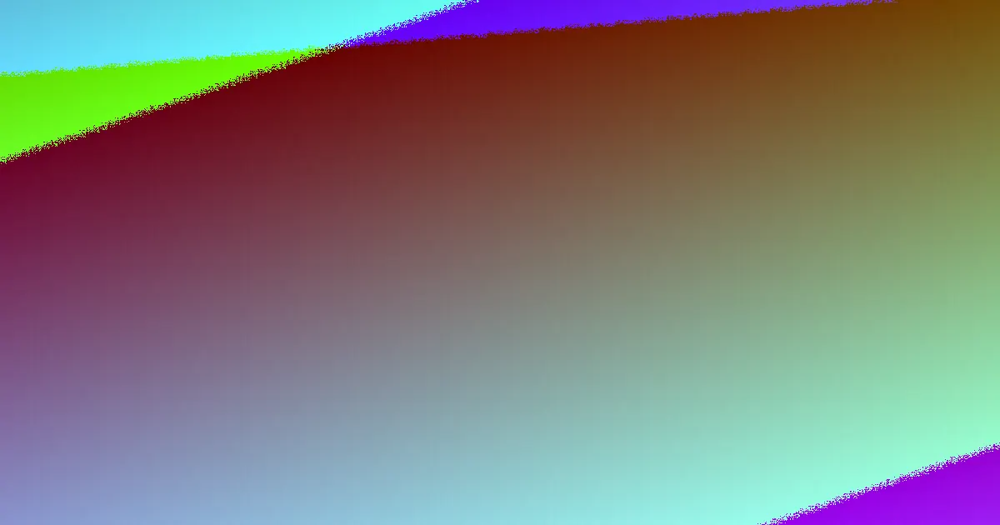

A shed pad depends on the footprint, ground level, machine access and drainage direction. The provider's published figures put a 6-tonne excavator with operator at $105 to $130 an hour, while rock is typically priced separately at $69 to $99 per cubic metre ex GST in South East Queensland, based on October 2026 information. A site assessment and written price clarify soil movement, spoil removal, access limits and weather-related timing.
For homeowners comparing shed pads toowoomba options, the practical decision comes down to the shed footprint, how the block falls, where machinery can enter and how excess soil will be handled.
Shed Pads Toowoomba Explained
Earthworks Toowoomba describes the first useful step as a site assessment. The contractor walks the block to read the slope, check machine access and look for buried items such as old fill, pipes and cables. Those conditions influence where the digger can work and how much material must be moved.
A level site is not necessarily a straightforward site. A steep block may need a deeper cut and more spoil moved than a flatter one. Narrow side access can favour a smaller excavator, while a larger machine with a wide access path may save hours when the job involves substantial soil movement. Confirm the available entry width, turning area and any surfaces that machinery must cross before accepting a quote.
The nearby guide to house pad preparation in Toowoomba is useful when a shed project sits alongside a broader block-development plan.
Match the pad to ground and drainage conditions
A shed pad follows the same cut-and-fill principle as a house pad, but the shed footprint and truck access determine the layout. High ground may be cut away and the low side built up. Before shaping begins, topsoil is usually stripped because soft organic soil is a poor base under a slab.
Clay needs particular attention during preparation. The published guidance explains that clay can swell when wet and shrink as it dries, so fill should be placed in thin layers and rolled at the right moisture. Fill placed too wet or too thick can continue settling after the slab is poured. Ask what material will be reused, where it will be placed and how compaction will be checked.
Drainage belongs in the same conversation as the finished level. Rain should run away from the slab area. Water pooling against a wall may indicate incorrect fall, although an inspection is needed to distinguish that from a blocked drain. A driveway that washes out during storms also points to a drainage and base issue, not merely a surface issue.
Price the work that changes the total
The hourly excavator figure is only one part of the estimate. The final amount turns on the volume of soil moved, whether rock is encountered, the machine selected and where unusable spoil must go. If excavated material cannot all be reused on the block, cartage and disposal add to the job.
Rock is identified as a separate pricing variable, with a typical South East Queensland surcharge of $69 to $99 per cubic metre ex GST in October 2026. Treat that as a question for the quote rather than an assumed allowance. Ask whether the estimate separates excavation, rock, loading, cartage, disposal, grading and final preparation.
- Describe the shed footprint and intended slab level.
- Explain the access path, gate width and truck position.
- Identify any known fill, pipes, cables or drainage problems.
- Request a written price that states exclusions and spoil arrangements.
Plan around weather and contract checks
Wet clay can clog tracks and make a yard difficult to work. The published local guidance recommends planning dig days around rainfall and choosing a cutting sequence that lets machines work from firmer ground. A house pad on an open, fairly flat block may move quickly, while a deep cut into a slope adds days. Wet weather can stop machines, so the timeline becomes firmer after the block has been inspected.
For larger domestic building work in Queensland, the published guidance says a written contract is required. Before agreeing, check that the document describes the work, price and relevant exclusions clearly. It is also possible to search a contractor's licence on the QBCC register before signing. These checks do not determine whether the design suits the shed, so keep the slab requirements and finished levels available for discussion.
Ask who is responsible for marking services, arranging access, moving stored materials and accepting or removing surplus spoil. Clear answers reduce changes once machinery is on site.
Who this guide applies to
This guide suits a homeowner preparing a shed slab on a Toowoomba block where the ground needs levelling, cut and fill, grading or spoil removal. It is most useful before requesting a written estimate, when the shed footprint and access route are known but the earthworks scope is not.
It also helps when a project includes related work such as driveway earthworks, retaining wall excavation, trenching or yard clean-up. Those items can change machine access, drainage and the volume of material leaving the site. Keep them separate in the brief so the quote shows what is included.
It is not a substitute for the shed supplier's slab requirements, a site inspection or confirmation of buried services. Take the proposed footprint, level information and access constraints to the contractor and ask which assumptions need checking on site.
- Record the footprint. Note the shed dimensions, proposed slab level and any truck or delivery requirements.
- Walk the access route. Check gates, side gaps, turning space, overhead restrictions and surfaces machinery must cross.
- List ground clues. Point out slopes, pooling water, old fill, visible pipes, cables and any rock indicators.
- Compare the written scope. Check excavation, fill, compaction, drainage, rock, cartage and disposal are addressed separately.
| Block condition | Likely planning focus | Question for the quote |
|---|---|---|
| Open, fairly flat block | Straightforward pad shaping and access | What soil movement and grading are included? |
| Sloping block or deep cut | More excavation, fill and possible extra spoil | How will the low side be built up and compacted? |
| Narrow access | Smaller machine or restricted truck movement | What machine fits, and where will spoil be loaded? |
| Wet clay or poor drainage | Weather planning, compaction and fall away from slab | What happens if rain stops the planned dig days? |
Common questions
How much can excavation cost for a shed pad? The published reference gives $105 to $130 an hour for a 6-tonne excavator with operator in October 2026. The final amount depends on soil volume, rock, access and spoil disposal, so a written price after a site visit is more useful than an hourly figure alone.
Does a sloping block take longer to prepare? It can. A deeper cut into a slope may add days and require more spoil to be moved than an open, fairly flat block. The timing should be confirmed after the contractor has walked the site.
What should be checked before excavation starts? Confirm the shed footprint, machine access, buried services, existing fill, drainage direction and spoil arrangements. A site assessment helps identify where the digger can work and which assumptions need to be priced.
Is rock included in an earthworks estimate? Not necessarily. The published guidance treats rock as a separate variable and gives a typical South East Queensland surcharge of $69 to $99 per cubic metre ex GST in October 2026. Ask whether the quote includes a rock allowance or a separate rate.
This guide covers shed-pad planning, site assessment, access, drainage, compaction, pricing variables and written-quote checks in Toowoomba.